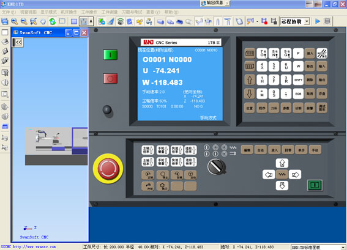
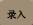
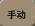
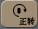
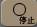
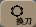
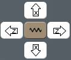
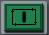

| KND1TB机床操作面板操作 |
机床操作面板位于窗口的右下侧，如下图所示。主要用于控制机床的运动和选择机床运行状态，由模式选择旋钮、数控程序运行控制开关等多个部分组成，每一部分的详细说明如下：

模式选择开关：
EDIT: 用于直接通过操作面板输入数控程序和编辑程序。
AUTO：进入自动加工模式。

MDI：手动数据输入。
JOG：手动方式，手动连续移动台面或者刀具。 机床主轴手动控制开关:
手动开机床主轴反转

手动开机床主轴正转
手动关机床主轴辅助功能按钮:
冷却液

换刀具手动移动机床台面按钮:

程序运行控制开关:

:循环启动
紧急停止按钮